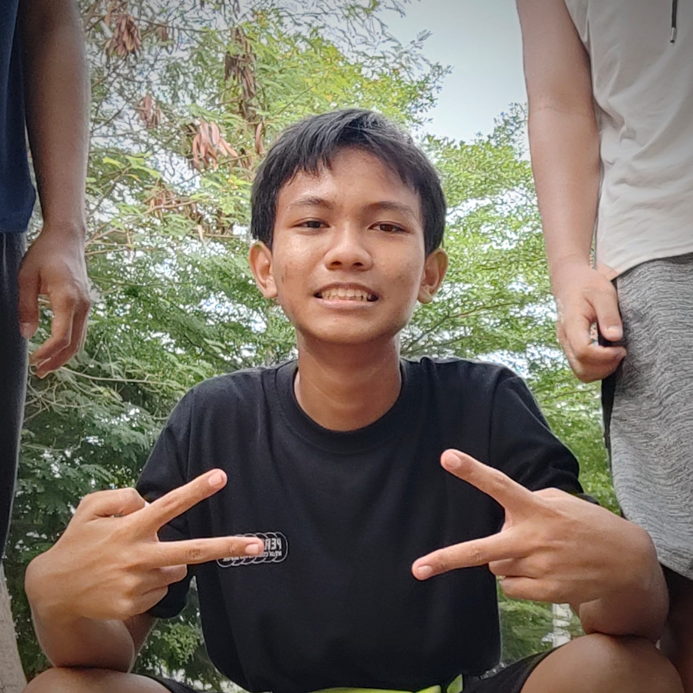
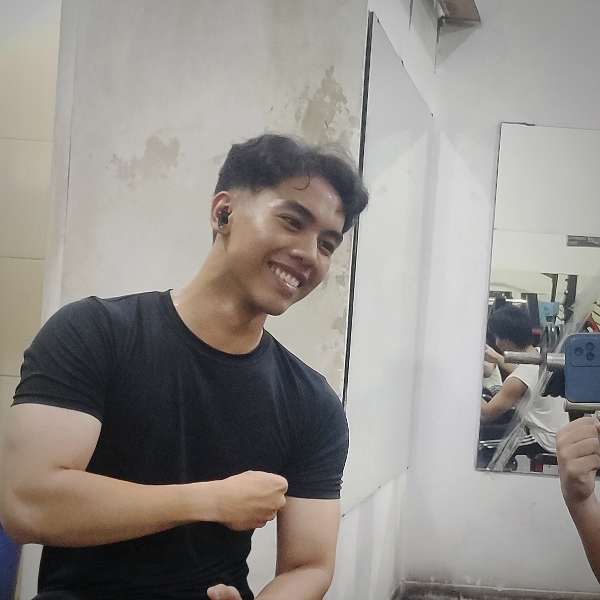
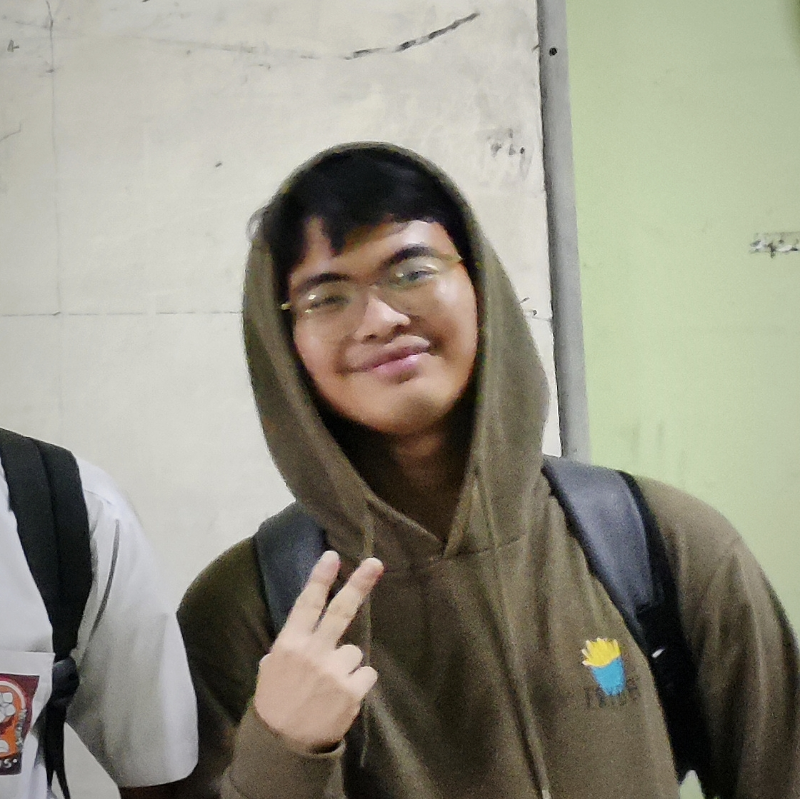
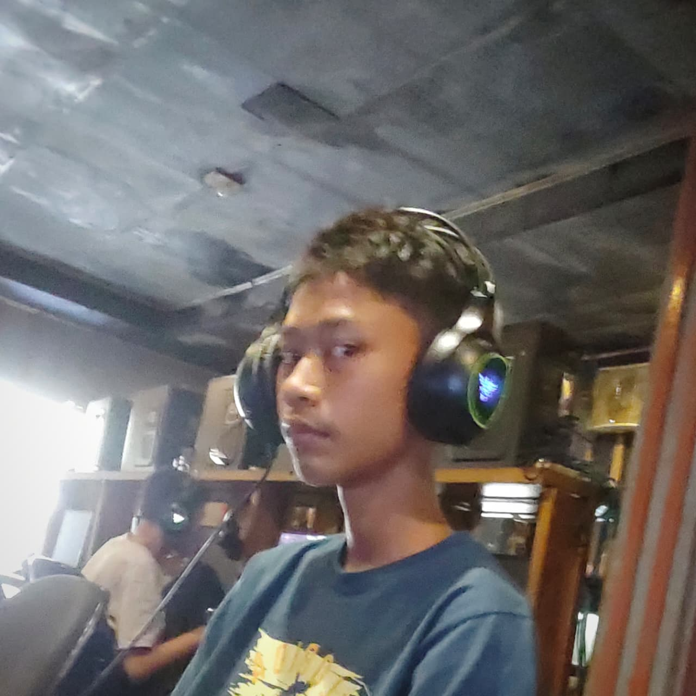

Teman Dekat

Alam
Deskripsi: Sangat pandai menggambar dan memadukan warna menjadi terlihat indah. Sangat pintar dalam bermain rubik, beliau benar-benar sangat berbakat dalam seni.

Dilan
Deskripsi: Satu sekolah terus dari TK hingga SMA, selalu saling mendukung satu sama lain terutama dalam hal gym. Beliau juga seorang gym trainer saya dan beliau sangat ahli dalam mengecek tarikan otot.

Zahir
Deskripsi: Seorang hacker profesional anonimus misterius. Paling jago kalau disuruh mencari bug yang tersembunyi. Beliau sudah berpengalaman sejak kelas 6 SD dalam dunia teknologi.

Epan
Deskripsi: Seorang pemuda yang sangat ahli geografi. Selalu bisa menemukan informasi tentang lokasi mana pun dengan cepat dan akurat. Mungkin beliau adalah penerus Eratosthenes.